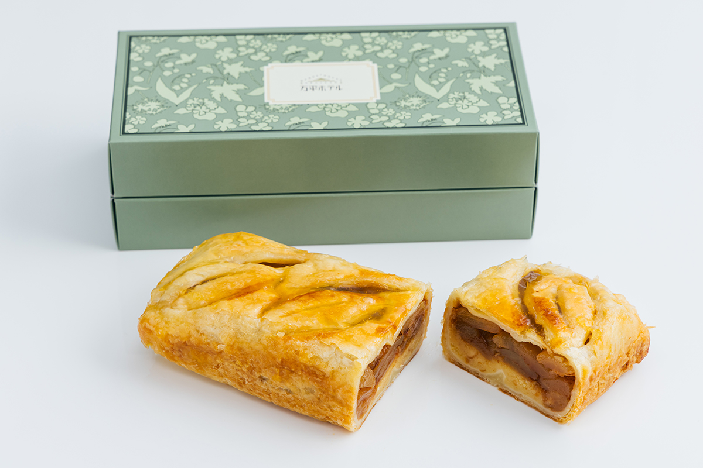
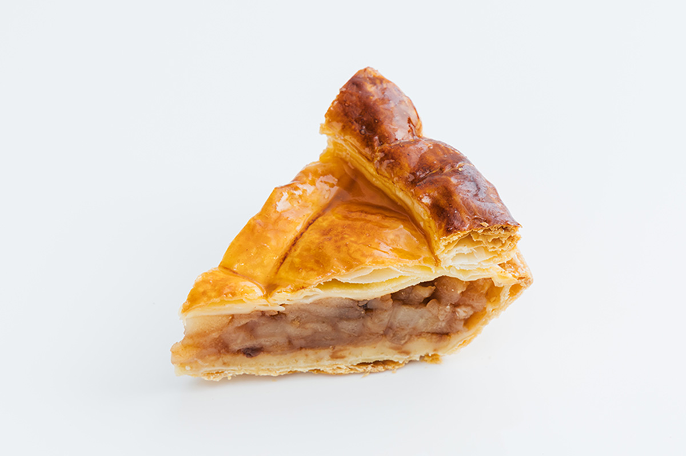
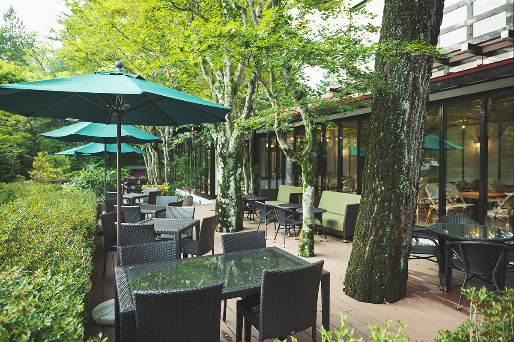
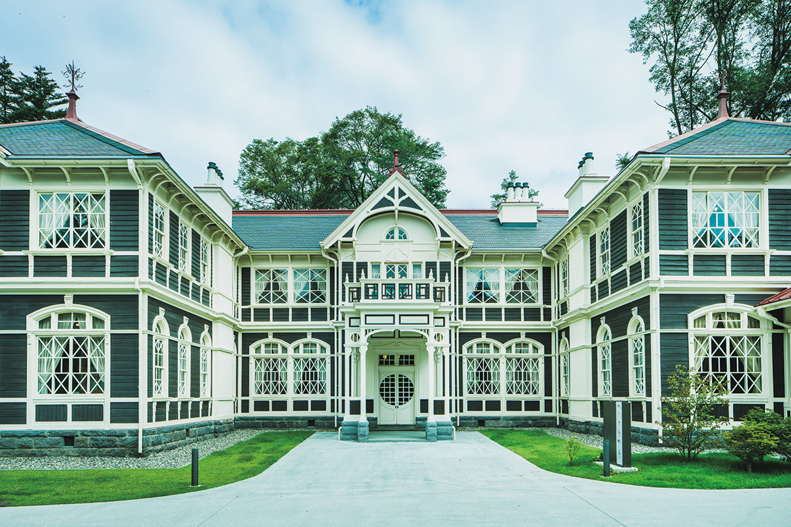
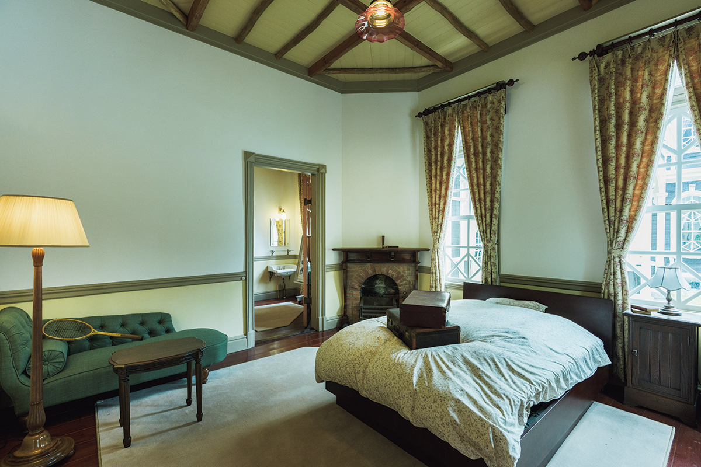
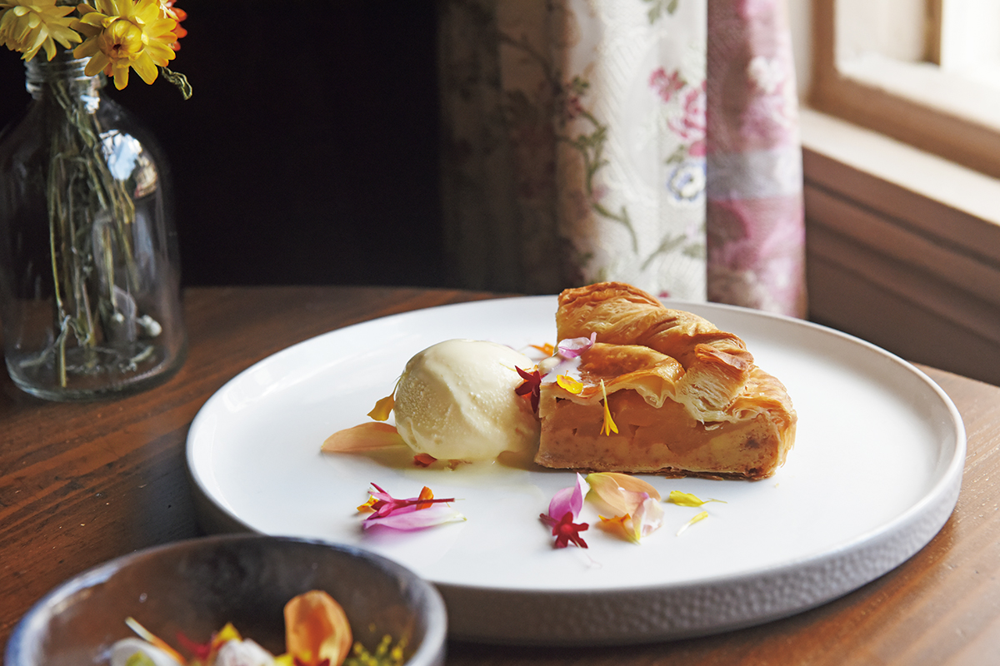

Префектура Нагано · Каруидзава · еда и архитектура
Mampei Hotel и бывший отель «Микаса»: яблочный пирог Джона Леннона и две старые гостиницы

Каруидзава стала курортом ещё в эпоху Мэйдзи, и две её старые гостиницы помнят то время. В Mampei Hotel с послевоенных лет пекут один и тот же яблочный пирог, а отель «Микаса» после долгой реставрации снова принимает гостей как музей с кафе.
Сладость
Яблочный пирог Mampei Hotel
Mampei Hotel одна из тех гостиниц, с которых в эпоху Мэйдзи (1868–1912) началась курортная Каруидзава, и её считают одним из классических отелей Японии. Самое знаменитое, что здесь подают, это «традиционный яблочный пирог». После войны отель занимала американская оккупационная администрация, и, как считается, пирог появился тогда по просьбе её служащих, которые хотели «вкус Америки».

Пирог простой, почти деревенский. Начинку делают из яблок сорта «когёку» (джонатан), выращенных в Синсю, и сахара с корицей кладут немного, чтобы чувствовалась свежая сладость самих яблок. Верхний слой теста слоёный, нижний песочный: сверху пирог лёгкий, снизу мягкий и влажный.
Около 1980 года, когда о Каруидзаве заговорили как о модном курорте, в отель стали приезжать специально ради пирога из кафе на террасе. Джон Леннон любил эту гостиницу и провёл в ней три лета. Говорят, на поздний завтрак он неизменно заказывал яблочный пирог. Попробовать его стоит так же, как было принято здесь, с фирменным королевским чаем с молоком.

Кусок пирога в кафе стоил 1500 иен в 2026 году, целый пирог навынос в магазине отеля 3300 иен. Он весит около 390 граммов и хранится 45 дней со дня выпечки.
Кафе на террасе Mampei Hotel
- Адрес
- префектура Нагано, уезд Китасаку, Каруидзава, Каруидзава, 925, корпус «Альпы», 1-й этаж
- Телефон
- +81 267-42-1234
- Часы работы
- 9:30–18:00 (последний заказ в 17:00)
- Выходные
- без выходных
- Цены / Вход
- кусок пирога 1500 иен
- Сайт
- mampei.co.jp
Магазин Mampei Hotel
- Адрес
- префектура Нагано, уезд Китасаку, Каруидзава, Каруидзава, 925, корпус «Альпы», 1-й этаж
- Телефон
- 0120-486-057 (бесплатный номер, звонки только из Японии)
- Часы работы
- 8:00–20:00
- Выходные
- без выходных
- Цены / Вход
- целый пирог 3300 иен
- Сайт
- mampei.co.jp
Архитектура
Бывший отель «Микаса»: здание 1906 года после реставрации
Отель «Микаса» открыл в Каруидзаве в 1906 году предприниматель. Газовые люстры, английские ковры и другое оснащение были тогда лучшими в стране, и здесь любили бывать деятели культуры, политики и деловые люди.

В 1970 году отель закрылся, а здание стало достопримечательностью как образец чисто западной архитектуры периода модернизации Японии. Оно охраняется государством как важная культурная ценность. Около пяти с половиной лет здание реставрировали, и в октябре 2025 года оно открылось снова. Помимо самих залов, которые можно осмотреть, здесь появились кафе, музейный магазин и залы, которые сдают, например, для свадебных фотосессий: старый отель стал местом для встреч и культурных событий.

В кафе подают собственные блюда, и среди них свой «Каруидзавский яблочный пирог». Так в одной поездке легко сравнить два пирога двух старых гостиниц.

Бывший отель «Микаса»
- Адрес
- префектура Нагано, уезд Китасаку, Каруидзава, Каруидзава, 1339-342
- Телефон
- +81 267-48-6341
- Часы работы
- 9:00–17:00 (вход до 16:30)
- Выходные
- среда (кроме периода с 15 июля по 31 октября; если среда праздничная, то первый будний день после неё), с 28 декабря по 3 января
- Цены / Вход
- 1000 иен
Фото: Майко Фукуи.